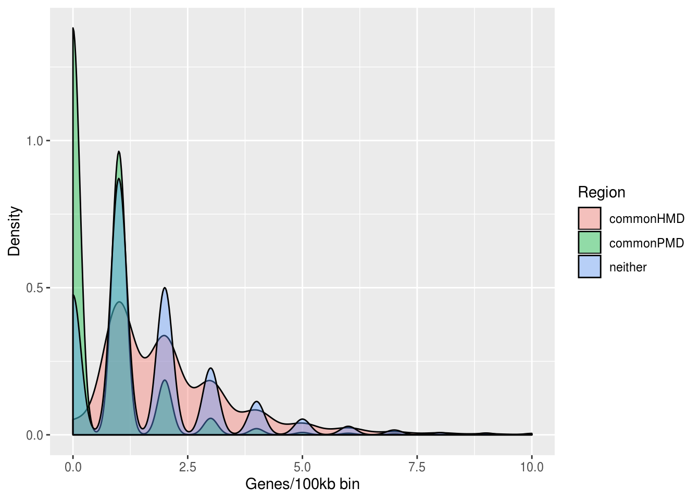

2: Basic Analysis
Kevin Brooks Henry
November 27, 2019
Last updated: 2019-12-13
Checks: 7 0
Knit directory: PMD_project_workflowr/analysis/
This reproducible R Markdown analysis was created with workflowr (version 1.5.0). The Checks tab describes the reproducibility checks that were applied when the results were created. The Past versions tab lists the development history.
Great! Since the R Markdown file has been committed to the Git repository, you know the exact version of the code that produced these results.
Great job! The global environment was empty. Objects defined in the global environment can affect the analysis in your R Markdown file in unknown ways. For reproduciblity it’s best to always run the code in an empty environment.
The command set.seed(20191128) was run prior to running the code in the R Markdown file. Setting a seed ensures that any results that rely on randomness, e.g. subsampling or permutations, are reproducible.
Great job! Recording the operating system, R version, and package versions is critical for reproducibility.
Nice! There were no cached chunks for this analysis, so you can be confident that you successfully produced the results during this run.
Great job! Using relative paths to the files within your workflowr project makes it easier to run your code on other machines.
Great! You are using Git for version control. Tracking code development and connecting the code version to the results is critical for reproducibility. The version displayed above was the version of the Git repository at the time these results were generated.
Note that you need to be careful to ensure that all relevant files for the analysis have been committed to Git prior to generating the results (you can use wflow_publish or wflow_git_commit). workflowr only checks the R Markdown file, but you know if there are other scripts or data files that it depends on. Below is the status of the Git repository when the results were generated:
Ignored files:
Ignored: .Rproj.user/
Untracked files:
Untracked: .gitignore
Untracked: code/
Untracked: data/Input/TFs/
Untracked: data/Input/wgEncodeRegTfbsClusteredV3.bed.gz
Untracked: data/Output/
Note that any generated files, e.g. HTML, png, CSS, etc., are not included in this status report because it is ok for generated content to have uncommitted changes.
These are the previous versions of the R Markdown and HTML files. If you’ve configured a remote Git repository (see ?wflow_git_remote), click on the hyperlinks in the table below to view them.
| File | Version | Author | Date | Message |
|---|---|---|---|---|
| Rmd | 19ceff7 | GitHub | 2019-12-13 | Add files via upload |
In this section I am running some basic analysis on the ‘regions’ object and PRAD data. This is namely seeing overall coverage of the regions against the hg19 genome and gene density between the different regions. In the second part I am assessing the quality of the PRAD data by looking at LUMP values and GSTP1 expression (explained in more detail below).
library(rtracklayer)
library(GenomicRanges)
library(ELMER)
library(MultiAssayExperiment)
library(TxDb.Hsapiens.UCSC.hg19.knownGene)
library(ggplot2)
library(TCGAbiolinks)
library(dplyr)load(file = '../data/Output/regions')
load(file = '../data/Output/df.regions')
load(file = "../data/Output/PRAD_mae")
load(file = "../data/Output/PRADexp")
load(file = "../data/Output/PRADmeth")First I’ll look at the coverage of the ‘regions’ object against the hg19 genome
region.length <- sum(width(regions))
hg19 <- GRangesForBSGenome(genome = 'hg19', chrom = NULL, ranges = NULL)
df.hg19 <- data.frame(hg19[c(1:22), ])
hg19 <- makeGRangesFromDataFrame(df.hg19,
keep.extra.columns = TRUE,
seqnames.field = 'seqnames',
start.field = 'start',
end.field = 'end')
hg19length <- sum(width(hg19))
region.length / hg19length * 100[1] 93.7085So overall the regions object covers 93.7084974 percent of the hg19 genome.
I think the slight discrepancy might be due to the regions that were lost when I loaded them up (see the warning present in the first code chunk of Regions_and_PRAD.Rmd).
PMD.length <- subset(regions, regions$region == 'commonPMD')
HMD.length <- subset(regions, regions$region == 'commonHMD')
neither.length <- subset(regions, regions$region == 'neither')
PMD.length <- sum(width(PMD.length))
HMD.length <- sum(width(HMD.length))
neither.length <- sum(width(neither.length))
region.lengths <- data.frame(region = c('PMD', 'HMD', 'Neither', 'Other (not in regions object)'),
length = c(PMD.length, HMD.length, neither.length, (hg19length - region.length)),
hg19.length = hg19length,
coverage = NA)
region.lengths$coverage <- region.lengths$length / region.lengths$hg19.length #*100
ggplot(region.lengths, aes(fill=region, y=coverage, x='region')) +
geom_bar(position="stack", stat="identity", width=0.2) +
coord_flip() +
scale_fill_grey(start = 0.25, end = 0.75) +
theme(axis.title.y=element_blank(),
axis.text.y=element_blank()) +
labs(y='Fraction of hg19 genome', fill='Region')
I can also look at the gene density within the different regions to see if it agrees with what has been seen in previously
human.genes <- genes(TxDb.Hsapiens.UCSC.hg19.knownGene)
gene.density <- regions
gene.density$totgenes <- countOverlaps(gene.density, human.genes)
df.gene.density <- as.data.frame(gene.density)
ggplot(data=df.gene.density, aes(x=totgenes, group=region, fill=region)) +
geom_density(adjust=1.5, alpha=.4) +
xlim(0, 10) +
labs(x='Genes/100kb bin', y='Density', fill='Region')Warning: Removed 55 rows containing non-finite values (stat_density).
#PMD.gene.density <- subset(df.gene.density, df.gene.density$region == 'commonPMD')
#nonPMD.gene.density <- subset(df.gene.density, df.gene.density$region == c('neither','commonHMD'))So as expected, most of the PMD bins contain few/no genes when compared with HMD and ‘neither’ regions
Here are some other papers looking at PMDs for comparison:
Toth et al Forest Model: https://clinicalepigeneticsjournal.biomedcentral.com/articles/10.1186/s13148-019-0736-8#Abs1 Brinkman Breast Cancer: https://www.nature.com/articles/s41467-019-09828-0 Lister Methylomes: https://www.nature.com/articles/nature08514 Gaidatzis: https://journals.plos.org/plosgenetics/article?id=10.1371/journal.pgen.1004143
I can more empirically test to see if the regions have different distributions of gene density using a KS test(?)
KS Test: https://en.wikipedia.org/wiki/Kolmogorov%E2%80%93Smirnov_test
PMD.gene.density <- subset(df.gene.density, df.gene.density$region == 'commonPMD')
nonPMD.gene.density <- subset(df.gene.density, df.gene.density$region == c('neither','commonHMD'))
ks.test(PMD.gene.density$totgenes, nonPMD.gene.density$totgenes)Warning in ks.test(PMD.gene.density$totgenes,
nonPMD.gene.density$totgenes): p-value will be approximate in the presence
of ties
Two-sample Kolmogorov-Smirnov test
data: PMD.gene.density$totgenes and nonPMD.gene.density$totgenes
D = 0.41125, p-value < 2.2e-16
alternative hypothesis: two-sidedFinally, I will do some quality checks on the PRAD data, this can be done by looking at correlation between GSTP1 gene expression and promoter methylation, as well as LUMP values for each of the PRAD patient samples
GSTP1 reference: https://www.ncbi.nlm.nih.gov/pmc/articles/PMC4995330/ LUMP reference: https://www.ncbi.nlm.nih.gov/pmc/articles/PMC4671203/
#LUMP scores can be gotten directly from TCGAbiolinks
Tumor.purity <- Tumor.purity
PRAD.tp <- subset(Tumor.purity, Tumor.purity$Sample.ID %in% PRAD.mae@sampleMap@listData[['primary']])
PRAD.tp$LUMP <- as.numeric(sub(",", ".", sub(".", "", PRAD.tp$LUMP, fixed=TRUE), fixed=TRUE))
PRAD.tp$CPE <- as.numeric(sub(",", ".", sub(".", "", PRAD.tp$CPE, fixed=TRUE), fixed=TRUE))
ggplot(PRAD.tp, aes(y=LUMP, x=CPE)) +
geom_jitter(color="black", size=0.4, alpha=0.9) +
ggtitle('PRAD CPE vs LUMP scores') +
xlab("CPE")Warning: Removed 78 rows containing missing values (geom_point).
scatter.plot(data = PRAD.mae,
byPair = list(probe = c('cg06928838'), gene = c('ENSG00000084207')),
category = 'definition',
save = FALSE,
lm_line = TRUE)
|
| | 0%
|
|=================================================================| 100%
From the above plots it is apparent that the quality of the patient samples is relatively high for the most part, with some lower quality samples and even missing LUMP scores for some of the tumor samples. I think that this is mostly ok for my purposes though, and the GSTP1 correlation looks good.
Also important to note here that 78 data points were missing either LUMP or CPE values.
sessionInfo()R version 3.5.2 (2018-12-20)
Platform: x86_64-redhat-linux-gnu (64-bit)
Running under: CentOS Linux 7 (Core)
Matrix products: default
BLAS/LAPACK: /usr/lib64/R/lib/libRblas.so
locale:
[1] LC_CTYPE=en_US.UTF-8 LC_NUMERIC=C
[3] LC_TIME=en_US.UTF-8 LC_COLLATE=en_US.UTF-8
[5] LC_MONETARY=en_US.UTF-8 LC_MESSAGES=en_US.UTF-8
[7] LC_PAPER=en_US.UTF-8 LC_NAME=C
[9] LC_ADDRESS=C LC_TELEPHONE=C
[11] LC_MEASUREMENT=en_US.UTF-8 LC_IDENTIFICATION=C
attached base packages:
[1] parallel stats4 stats graphics grDevices utils datasets
[8] methods base
other attached packages:
[1] BSgenome.Hsapiens.UCSC.hg19_1.4.0
[2] BSgenome_1.50.0
[3] Biostrings_2.50.2
[4] XVector_0.22.0
[5] dplyr_0.8.3
[6] TCGAbiolinks_2.13.6
[7] ggplot2_3.2.1
[8] TxDb.Hsapiens.UCSC.hg19.knownGene_3.2.2
[9] GenomicFeatures_1.34.8
[10] AnnotationDbi_1.44.0
[11] MultiAssayExperiment_1.8.3
[12] SummarizedExperiment_1.12.0
[13] DelayedArray_0.8.0
[14] BiocParallel_1.16.6
[15] matrixStats_0.55.0
[16] Biobase_2.42.0
[17] ELMER_2.6.3
[18] ELMER.data_2.6.0
[19] rtracklayer_1.42.2
[20] GenomicRanges_1.34.0
[21] GenomeInfoDb_1.18.2
[22] IRanges_2.16.0
[23] S4Vectors_0.20.1
[24] BiocGenerics_0.28.0
loaded via a namespace (and not attached):
[1] R.utils_2.9.0 tidyselect_0.2.5
[3] RSQLite_2.1.2 htmlwidgets_1.5.1
[5] grid_3.5.2 DESeq_1.34.1
[7] munsell_0.5.0 codetools_0.2-15
[9] withr_2.1.2 colorspace_1.4-2
[11] knitr_1.25 rstudioapi_0.10
[13] ggsignif_0.6.0 labeling_0.3
[15] git2r_0.26.1 GenomeInfoDbData_1.2.0
[17] hwriter_1.3.2 KMsurv_0.1-5
[19] bit64_0.9-8 rprojroot_1.3-2
[21] downloader_0.4 vctrs_0.2.0
[23] generics_0.0.2 xfun_0.10
[25] biovizBase_1.30.1 ggthemes_4.2.0
[27] BiocFileCache_1.6.0 EDASeq_2.16.3
[29] R6_2.4.0 doParallel_1.0.15
[31] locfit_1.5-9.1 AnnotationFilter_1.6.0
[33] bitops_1.0-6 reshape_0.8.8
[35] assertthat_0.2.1 promises_1.1.0
[37] scales_1.0.0 nnet_7.3-12
[39] gtable_0.3.0 sva_3.30.1
[41] ensembldb_2.6.8 workflowr_1.5.0
[43] rlang_0.4.0 zeallot_0.1.0
[45] genefilter_1.64.0 GlobalOptions_0.1.1
[47] splines_3.5.2 lazyeval_0.2.2
[49] acepack_1.4.1 dichromat_2.0-1
[51] selectr_0.4-1 broom_0.5.2
[53] checkmate_1.9.4 yaml_2.2.0
[55] backports_1.1.5 httpuv_1.5.2
[57] Hmisc_4.2-0 tools_3.5.2
[59] RColorBrewer_1.1-2 Rcpp_1.0.2
[61] plyr_1.8.4 base64enc_0.1-4
[63] progress_1.2.2 zlibbioc_1.28.0
[65] purrr_0.3.3 RCurl_1.96-0
[67] prettyunits_1.0.2 ggpubr_0.2.3
[69] rpart_4.1-13 openssl_1.4.1
[71] GetoptLong_0.1.7 zoo_1.8-7
[73] ggrepel_0.8.1 cluster_2.0.7-1
[75] fs_1.3.1 magrittr_1.5
[77] data.table_1.12.6 circlize_0.4.8
[79] survminer_0.4.6 whisker_0.4
[81] ProtGenerics_1.14.0 aroma.light_3.12.0
[83] hms_0.5.1 evaluate_0.14
[85] xtable_1.8-5 XML_3.99-0
[87] gridExtra_2.3 shape_1.4.4
[89] compiler_3.5.2 biomaRt_2.41.9
[91] tibble_2.1.3 crayon_1.3.4
[93] R.oo_1.22.0 htmltools_0.4.0
[95] mgcv_1.8-26 later_1.0.0
[97] Formula_1.2-3 tidyr_1.0.0
[99] geneplotter_1.60.0 DBI_1.0.0
[101] dbplyr_1.4.2 matlab_1.0.2
[103] ComplexHeatmap_1.20.0 rappdirs_0.3.1
[105] ShortRead_1.40.0 Matrix_1.2-15
[107] readr_1.3.1 R.methodsS3_1.7.1
[109] Gviz_1.26.5 pkgconfig_2.0.3
[111] km.ci_0.5-2 GenomicAlignments_1.18.1
[113] foreign_0.8-71 plotly_4.9.0
[115] xml2_1.2.2 foreach_1.5.1
[117] annotate_1.60.1 rvest_0.3.4
[119] stringr_1.4.0 VariantAnnotation_1.28.13
[121] digest_0.6.22 ConsensusClusterPlus_1.46.0
[123] rmarkdown_1.16 survMisc_0.5.5
[125] htmlTable_1.13.2 edgeR_3.24.3
[127] curl_4.2 Rsamtools_1.34.1
[129] rjson_0.2.20 lifecycle_0.1.0
[131] nlme_3.1-137 jsonlite_1.6
[133] viridisLite_0.3.0 askpass_1.1
[135] limma_3.38.3 pillar_1.4.2
[137] lattice_0.20-38 httr_1.4.1
[139] survival_2.43-3 glue_1.3.1
[141] iterators_1.0.12 bit_1.1-14
[143] stringi_1.4.3 blob_1.2.0
[145] latticeExtra_0.6-28 memoise_1.1.0